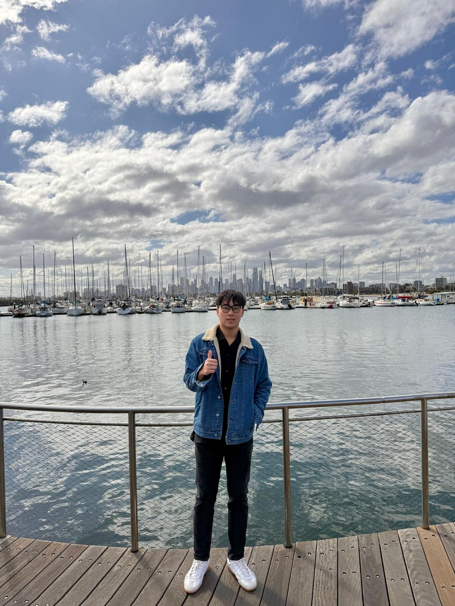

Residence booking web app
A web application I built as a booking service for my own residence, inspired by Airbnb’s accommodation-booking model.
Accommodation booking
Software engineering. Built with intent.
I’m a student at Taylor’s University exploring the intersection of thoughtful design and full-stack development. Ready to learn, build, and contribute.

A web application I built as a booking service for my own residence, inspired by Airbnb’s accommodation-booking model.
A tourism app developed for ImagineHacks, with React interfaces and UI/UX wireframes informed by relational data needs and scalability considerations.
Web applications connecting frontend interfaces with server-side logic and MySQL databases, with Figma wireframes and prototypes guiding development.
Relational database schemas and SQL queries in MySQL, exploring data modeling, normalization, and optimization through coursework projects.
I enjoy bringing the pieces together — from an interface’s first wireframe to the database behind it.
I’m a second-year Software Engineering student at Taylor’s University with hands-on academic experience in web development, database management, and UI/UX design. I work with React, backend technologies, MySQL, and Figma to connect design with functionality.
Now preparing for a software engineering internship, I’m looking for an opportunity to put my skills into practice and keep learning alongside a team.
Our tourism application earned a top-10 finish at ImagineHacks, Taylor’s University’s hackathon — bringing together React development, UI/UX wireframes, and application architecture.
ImagineHacks · Taylor’s UniversityGrowing a practical foundation across design, development, and testing.
Subang Jaya, Malaysia
Second year · Final semester before internship
English · Bahasa Indonesia · Bahasa Melayu · Chinese (basic)
Have an internship opportunity or a project in mind?
I’d love to hear from you.